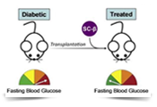

Por favor pinche aquí si no puede verlo correctamente.
AstraZeneca Y RedGDPS PRESENTAN:
EL PRIMER CURSO ONLINE AVANZADO EN DIABETES
Como la tecnología, la medicina y el conocimiento en diabetes, siguen avanzando a pasos agigantados, AstraZeneca apuesta por facilitar a los Médicos de Atención Primaria, el acceso a una formación continuada.
Desde la RedGDPS y en colaboración con AstraZeneca, se ha desarrollado el 1er Curso avanzado en diabetes online para Médicos Senior de Medicina de Familia. Este curso surgió tras la celebración el pasado mes de junio de las Primeras Jornadas Nacionales en Diabetes para Médicos senior organizada por la RedGDPS con el patrocinio de AZ, y que gozó de una buena valoración entre los asistentes.
El objetivo de este curso es profundizar en el conocimiento y manejo de pacientes con diabetes, entrenando al Médico de familia en situaciones frecuentes en su práctica clínica, para que pueda responder con conocimiento y eficacia. Además, el curso está reconocido por la Comisión de Formación continuada de las profesiones sanitarias con 1,6 créditos.
Para realizar este curso online de forma totalmente gratuita,
visite la web www.redgdpsavanzado.com
e introduzca el siguiente código de acceso: redgdpsavanzado2014.
BENEFICIOS DE ▼FORXIGA®
A CORTO Y LARGO PLAZO
En el manejo de los pacientes con DM2, el control de la glicada y el peso, son objetivos fundamentales. En España, el 48,6% de los pacientes diabéticos no alcanza el objetivo de control glucémico de HbA1c <7% (1). Además, en la diabetes tipo 2, el exceso de peso tiene una mayor contribución a la mortalidad (2).
FORXIGA®* es el único antidiabético oral que consigue, gracias a su nuevo mecanismo de acción independiente de la insulina el 2+2:
2 beneficios a corto plazo:
-
Reducciones potentes y tempranas sobre glicada (3-12). En pacientes con glicadas iguales o superiores a 9, FORXIGA® en combinación con metformina produjo una reducción de -1,32% de HbA1c (glicada)#.
- Reducción de peso: FORXIGA® añadido a metformina consigue una diferencia de peso de -4,65 kg vs. al grupo de pacientes tratados con glipizida + metformina (8).
2 beneficios a largo plazo, a los 2 años de seguimiento:
-
Durabilidad de la disminución de la glicada y pérdida de peso: FORXIGA® añadido a metformina consigue una diferencia de peso de -5,1 kg vs. pacientes tratados con glipizida + metformina (13).
- Reducción de la resistencia a la insulina y preservación de la funcionalidad de la célula β (14-17).
Con una incidencia de hipoglucemias similar a placebo (3)†.
 |
|  |
| SE HA LOGRADO TRASPLANTAR CÉLULAS BETA PRODUCTORAS DE INSULINA EN RATONES |
|
El equipo científico dirigido por Doug Melton, de la Universidad de Harvard, ha logrado trasplantar en ratones células beta productoras de insulina obtenidas a partir de células madre. Se piensa que los ensayos en humanos podrían comenzar en dos o tres años. Este hallazgo abre la esperanza para la cura de la diabetes tipo 1 en humanos. Con el trasplante de células beta se permitiría recuperar la producción de insulina por su propio organismo y eliminaría la necesidad de ponerse inyecciones de insulina exógena. Fuente: 20minutos.es |
(▼) Este medicamento está sujeto a seguimiento adicional, es prioritaria la notificación de sospechas de reacciones adversas asociadas a este medicamento.
*Forxiga® no está indicado para el tratamiento de la obesidad, y la pérdida de peso fue un criterio de valoración secundario en los ensayos clínicos.
(#) En pacientes con glicadas por debajo de 9, la reducción fue de -0,84%.
† Excepto en combinacion con SU e insulina.
Fuente: 1.Pérez A, Mediavilla JJ, Minambres I, et al. Control glucémico en pacientes con diabetes mellitus tipo 2 en España. Rev Clin Esp 2014;DOI: 10.1016/j.rce.2014.05.028. 2. Martin Ramiro JJ, et al. Med Clin (Barc) 2014; 142 (12): 526-530. 3. Ficha técnica de FORXIGA. Disponible en la página web http://www.emea.europa.eu/ Acceso: Julio 2014. 4. Bailey CJ, et al. Lancet. 2010;375:2223–2233. 5. Bailey CJ, et al. BMC Med 2013;11:43. 6. Ferrannini E, et al. Diabetes Care. 2010; 2010;33:2217–2224. 7. Strojek K et al. Diabetes Obes Metab 2011; 13:928-938. 8. Rosenstock J, et al. Diabetes Care 2012;35:1473-8. 9. Nauck MA, et al. Diabetes Care 2011;34:2015–22;2. 10. Wilding J.P.H, et al. Ann Intern Med. 2012;156:405-415. 11. Bailey CJ, Wilding, JPH, Nauck M, et al. Sustained Reductions in Weight and HbA1c with Dapagliflozin: Long-term Results from Phase III Clinical Studies in Type 2 Diabetes. Poster 721 presentado en 48th EASD Meeting, 1–5 octubre 2012; Berlin, Germany. 12. Mitri J, Hamdy O. Expert Opin Drug Saf. 2009;8:573-84. 13. Nauck MA, Del Prato S, Duran-Garcia S, et al. Diabetes Obes Metab. 2014. doi: 10.1111/dom.12327. [Epub ahead of print]. 14. Abdul-Ghani M, Merovci A,Solis C, et al. Dapagliflozin improves muscle glucose uptake and increases hepatic glucose production in type 2 diabetes mellitus individuals. Diabetologia 2013; 56 (suppl 1): S248. 49th Annual Meeting of the European Association for the Study of Diabetes, EASD 2013;23-27 Septiembre 2013. 15. Iqbal N, et al. Measures of beta cell function and insulin sensitivity over time in patients with type 2 diabetes receiving dapagliflozin versus glipizide as add-on therapy to metformin. Diabetologia 2012;55:(Suppl1):S308. 16. Mudaliar S, Henry RR, Boden G, et al. Diabetes Technology & Therapeutics 2014; 16 (3). doi: 10.1089/dia.2013.0167. 17. Langkilde A, Rohwedder K,Iqbal N, et al. Measures of beta cell function and insulin sensitivity over time in patients with type 2 diabetes receiving dapagliflozin versus glipizide as add-on therapy to metformin. Diabetologia 2012;55:(Suppl1):S308
Haga click aquí para acceder a la ficha técnica de Forxiga®.
De acuerdo con el RD 577/2013 por el que se regula la Farmacovigilancia de medicamentos de uso humano, los profesionales sanitarios deben notificar las sospechas de reacciones adversas de los medicamentos autorizados al Centro Autonómico de Farmacovigilancia correspondiente a su ámbito asistencial. La dirección web para su notificación electrónica estará disponible en las fichas técnicas de los medicamentos.
A su vez, puede contactar con el área de farmacovigilancia de AstraZeneca a través del buzón patientsafety.spain@astrazeneca.com
Para más información contáctenos en www.nosconectalasalud.com o llamando a nuestro teléfono de Atención al cliente
900 103 151.
Sus datos personales provienen de un fichero titularidad de ASTRAZENECA FARMACÉUTICA SPAIN, S.A. con la finalidad de prestarle los servicios solicitados y poder remitirle información. Incluso por medios electrónicos sobre los servicios y productos de ASTRAZENECA y las empresas del Grupo AstraZeneca del sector farmacéutico en España, así como del transcurso o convocatoria de eventos, jornadas, actividades y estudios estadísticos y de mercado que cualquiera de dichas entidades pueda organizar individual o conjuntamente con otras. Puede ejercer sus derechos de acceso, rectificación, cancelación y oposición dirigiéndose por escrito a calle Serrano Galvache, número 56. C.E. Parque Norte, Edificio Roble, 28033 de Madrid, acompañado de una fotocopia de su DNI.
© 2014 NosConectaLaSalud
Reciba un cordial saludo,